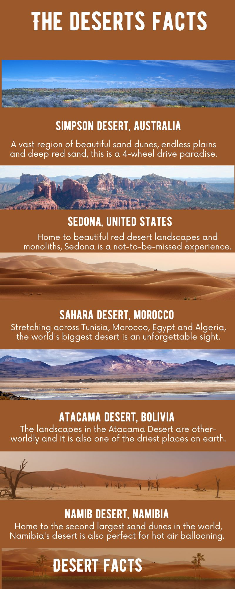

Arabian Desert
Atacama Desert
Chihuahuan Desert
Gobi Desert
Great Basin Desert
Great Sandy Desert
Great Victoria Desert
Kalahari Desert
Karakum Desert
Kyzylkum Desert
Mojave Desert
Namib Desert
Patagonian Desert
Rub’ Al Khali
Sahara Desert
Sonoran Desert
Syrian Desert
Taklamakan Desert
Thar Desert
Antarctica

Deserts are unique ecosystems that are characterized by their harsh climatic conditions. They are known for their extreme temperatures, limited precipitation, and sparse vegetation. Despite these challenges, deserts are home to a diverse range of plants and animals that have adapted to survive in these conditions. Some of the most famous deserts include the Sahara in Africa, the Mojave in North America, and the Gobi in Asia. Whether you are interested in exploring the natural beauty of these arid landscapes or studying the unique adaptations of desert creatures, there is no shortage of fascinating things to discover in deserts around the world.
One of the most interesting aspects of deserts is the way that plants and animals have adapted to thrive in this challenging environment. For example, many desert plants have evolved to store water in their tissues or have developed long root systems that allow them to access water deep underground. Similarly, desert animals have developed a variety of strategies to cope with the extreme temperatures and limited resources of their habitat. Some animals, such as the fennec fox, have large ears that help them dissipate heat, while others, like the kangaroo rat, are able to survive for long periods of time without water by conserving moisture in their bodies. Whether you are a biologist studying these adaptations or simply a nature lover interested in exploring these unique ecosystems, deserts are sure to offer a wealth of opportunities for learning and discovery.
Fun facts.
Did you know that it snowed in the Sahara desert in 1979? Rain has never been recorded in parts of Chile's Atacama Desert. It is the driest place on earth. Camels can run as fast as 65 km/h, which is as fast as your parents drive their car to work. In the deserts, there is gold and diamonds. The most popular desert is the Sahara Desert. Sahara means desert in Arabic. In the deserts, there are some cacti. A cactus is a plant with spines. Deserts have a large difference between day and night in temperature. Some deserts have snow or ice at night due to negative temperatures.
Most of the deserts, except for Antarctica, can reach up to 53 degrees. Antarctica can reach up to -90 degrees.